webdoc命令是Stata的一项外部命令，它旨在将Stata的do文件转化为html文件，并为此配置了一系列的（繁杂的）选项设置。
鉴于国内还没有相关的中文资料，本篇文章将详细介绍关于webdoc的参数配置选项。
0.准备与配置
- 安装webdoc：
ssc install webdoc 在本篇文章中，我们使用模板do文件如下
1234sysuse autosummarize price mpgregress price mpgtwoway (scatter price mpg) (lfit price mpg)
1.迅速开始
1.1 example1
新建do文件example1.do，输入如下内容
|
|
在Stata命令框中输入命令：
webdoc do example1.do
得到html文件
1.2 基本解释
webdoc命令的形式有一点特殊，它由两部分组成：
- 第一部分是webdoc do命令，格式为：
webdoc do filename [arguments] [, do_options]
- 第二部分是
webdoc 标签命令
通过webdoc do命令，我们可以将一份do文档转化为html文档，当然，这份do文档会有一些格式要求，如下：
- do文档中的
/*** ***/之间写入html代码，它们会在webdoc do命令进行处理时被直接写入html文件。 webdoc 标签命令是webdoc为了方便生成html文件而特意准备的一系列命令，它们写在将要被转换的do文件里，在遇到webdoc do命令执行时，执行其相应功能。简要介绍其中的两个标签命令webdoc init [docname][,do_options]这一webdoc标签命令用来初始化html文件，该命令的do_options有：replace:覆盖已存在的同名文件logall:要求日志记录所有的Stata输出结果。
webdoc graph用于将之前生成的图片输出到html文件中。
- do文档在
/*** ***/之外可以自由书写Stata命令，它们会(也可以选择不会)输出到html文件中(包括命令自身和命令得到的结果)
也就是说，在被转换的do文档中包含有Stata命令、webdoc 标签命令还有一部分的html代码，当使用webdoc do命令转换时，
- Stata命令会被Stata执行，将执行的结果返回到html文件中
- webdoc标签命令会执行其相应功能
- html代码部分则原封不动地添加进html文件中
文档的这三部分内容共同组成了最后的html文件。
2.webdoc命令概览
2.1 webdoc do
webdoc do命令将一份do文档转换为html文档或者markdown文档，该命令与 do 命令的选项设置很相似(事实上是同本同源)，因此大部分选项是通用的。
其语法为
webdoc do filename [arguments] [, do_options]
do_options一览
[no]init[(docname)]初始化目标文件nostop遇到错误报告不停止cd输入该do文件所在位置
argument用于设置传入do文件的局部宏
2.2 webdoc标签命令一览
webdoc init [docname] [, init_options]初始化输出文件，设置相关全局属性/*** ... ***/在do文件的相应位置中加入html代码(后续介绍中简称为代码区)webdoc substitute [from to ...] [, add]替换代码区的元素webdoc write ...输出一行文本（除了换行符）webdoc put ...输出包含换行符的一行文本webdoc append filename [, append_opts]在相应位置引入某文件内的内容webdoc toc [levels [offset]] [, ...]加入一个标题webdoc stlog [name] [, stlog_options]开启一个Stata log记录webdoc stlog oom cmdline隐藏命令行，并在相应部分有”output omitted” 的记录webdoc stlog quietly cmdline隐藏命令行，啥也不说webdoc stlog cnp插入一个换页符，并增加一句”continued on next page”webdoc stlog close停止Stata log记录webdoc stlog [name] using dofile [, ...]载入某个do文件的命令的记录webdoc stlog [name] [, ...] : command加入某个命令的输出结果webdoc local name definition定义一个局部宏webdoc graph [name] [, graph_options]插入一张图片webdoc close关闭输出文件webdoc set [setname [definition]]改变html标签设置webdoc strip filename newname [, replace append]将一个do文件中的所有webdoc 标签命令移除
3.webdoc init
该命令用于初始化将要输出的html(或markdown)文档
语法格式为
webdoc init [docname] [, init_options]
init_options选项如下：
- Main
- replace: 如果当前目录有同名文件，覆盖之。
- append： 如果当前目录有同名文件，增加之。
- md： 选择输出文件类型为md，默认选项是html。
- header[(header_opts)]: 创建一个独立的html文档(有开头与结尾的相应标签)，其中还有更具体的 header_opts 以供细化。
- Log and graph options
- [no]logall： 指定是否需要开启记录所有的Stata输出结果，默认值为不开启。
- stlog_options: 该选项通过
webdoc stlog命令发挥作用。 - gropts(graph_options)： 该选项通过
webdoc graph命令发挥作用。
- Filenames/paths
- [no]logdir[(path)]: 指定存储Stata记录文件的生成路径。默认为当前目录。
- grdir(path) 指定存储Stata产生的图片的生成路径。默认为当前目录。
- dodir(path) 指定存储do-files的生成路径。默认为当前目录。
- [no]prefix[(prefix)] 指定生成文件的文件名。
- [no]stpath[(path)] 指定输出文件中的include-path
试一试，建立webdoc_init.do 文档
|
|
在这次webdoc init 中，logdir(“webdoc_init”)表示将这次运行生成的log文件存放于webdoc_init目录下，grdir(“webdoc_init_pict”)表示将这次运行生成的图片存放于``目录下，dodir(“webdoc_init_do”)表示指定生成do文件的目录，它会生成对应文件夹，在某些特殊时刻有作用（后续中有的命令会生成关于do文件的命令的拷贝版本，即生成了一份do文件），prefix(“yes”)将log文件及图片文件的文件名改为yes。stpath(“path”)会在html文件中的图片中加入一层相对路径。
webdoc do webdoc_init.do
如下图

如果我们在原来的基础上，使用 append功能，则新内容会被加入同名文件内，注意：replace和append不能同时使用。
试一试 建立webdoc_init_1.do 文档
|
|
如下图

header[(header_opts)] 选项如下
- Main
- width(width)：设置页面宽度
- nofooter 忽略结尾标签（当这份html文件没有完稿时，可以使用该选项）
- Meta data
- title(str) 指定文件标题
- author(str) 指定文件作者
- date(str) 指定文件日期
- description(str) 添加文件描述
- keywords(str) 添加文件的关键词列表（以逗号分隔）
- language(str) 指定文件语言，默认为language(en)
- charset(str) 指定文件编码形式，默认为utf-8
- Stylesheets
- bstheme[(spec)] 从 http://bootswatch.com 中指定一个Bootstrap的CSS主题， spec 中的内容为 [theme] [,jscript selfcontained] 形式
- theme 名称可以为 default cerulean cosmo simplex united 更多请参考bootswatch官网，如果该选项被忽略，则自动使用 default主题
- 如果你想加入需要调用javascript的Bootstrap元素，则可以指定 jscript 选项，程序为为你添加进相关的插入元素。
- 如果指定
selfcontained选项，则将所引用的CSS及JS全部囊括至目标文件中。 - 最后的最后，如果你未添加
bstheme选项，则它会在你的头文件中写入一个最基本的CSS设定。
- include(filename) 从 filename 中导入内容到
<head></head> - stscheme(stscheme_opts) 指定Stata输出的外观主题
- 事前提要：由
cmdlog所产生的section 内容不会受到 stscheme 影响。 - Stata scheme
- standard 使用 standard 主题（直接在stscheme中填写即可）
- studio
- classic
- desert
- mountain
- ocean
- simple
- Manual settings
- bg(color) 指定背景颜色，color使用16进制颜色码，如#00ff00
- fg(color) 指定前置颜色
- rfg(color) 指定输出结果的字体颜色
- cfg(color) 指定命令颜色
- rbf 输出结果加粗
- cbf 输入结果加粗
- lcom 输出结果斜体或加阴影
- 事前提要：由
- bstheme[(spec)] 从 http://bootswatch.com 中指定一个Bootstrap的CSS主题， spec 中的内容为 [theme] [,jscript selfcontained] 形式
试一试 建立webdoc_init_2.do 文档
|
|
在这篇do文档里，我们把main和meta-data里的选项试了个遍，具体含义在之前已经阐述，这里只重点提两个
- nofooter 如果在文档中并没有添加
</body></html>，且没有设置nofooter选项，则程序会自动加上如上的结尾标志，但如果加入了nofooter选项，则不会生成，但不用担心，虽然你的html文件不完整，但天底下不合规的html文件何其多，并不影响浏览器正常解析 - stscheme 是一组命令选项，详细配置会在下一个示例文档中体现
本次命令效果如下图：
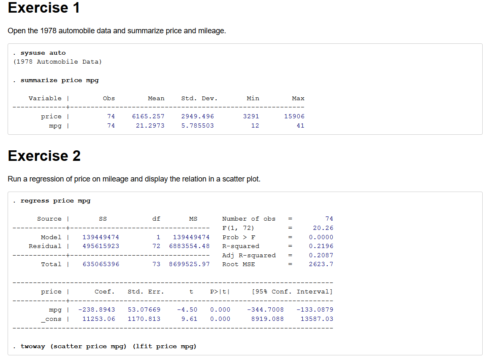
查看其源代码，可见我们设定的信息已经全部写入了
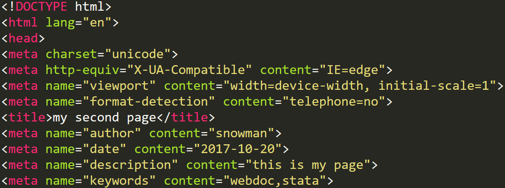
试一试 建立webdoc_init_3.do 文档
|
|
在这篇文档中，我们详细测试了Stylesheets类别的相关选项，bstheme(darkly ,jscript selfcontained)表示引入Bootstrap的darkly主题CSS文件，并同时引入Bootstrap的js脚本，同时，将引入的CSS文件及JS脚本直接写入文件中。stscheme引入主题以更改Stata输出结果的外观，stscheme("studio" rbf cbf bg(#00ff00)表示命令、输出结果均加粗，背景颜色使用#00ff00，十六进制rgb颜色码。
效果图如下(有一点辣眼睛…)：
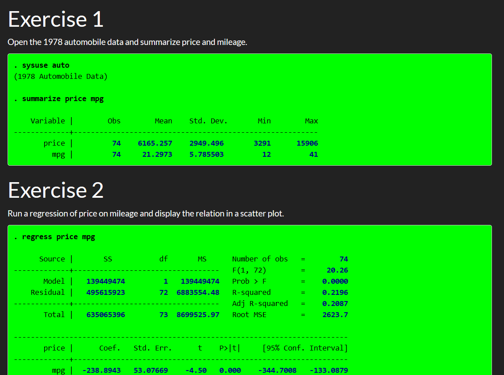
4.webdoc stlog
webdoc stlog [name] [, stlog_options]
webdoc stlog 将Stata的输出结果写入html文档中。
该命令的原理是将命令的输出结果写入log文件中，再将其内容写入html里，
该命令其实包含着一组子命令，见下方：
- webdoc stlog oom cmdline 可以将该命令的输出内容隐藏，并加上一句 “output omitted”信息
- webdoc stlog quietly cmdline 可以将该命令的输出内容隐藏，并且不报告相应信息。
- webdoc stlog cnp 可以插入一条分页标记，以及”continued on next page”
- webdoc stlog close 表示一个输出模块的结束，
- webdoc stlog filename 将一个外部do文件的输出结果加入本html中，filename即为do文件名称
- webdoc stlog command 输出 command的输出结果，隐藏命令本身。在该命令下，使不需要 webdoc stlog close 的。
PS：你也可以不选择这种方式来添加输出结果，而是在webdoc do 或者 webdoc init 中指定 logall 选项。
试一试，建立webdoc_stlog_1.do
|
|
这份文档将webdoc stlog的主要子命令都使用了一遍，并在webdoc init中取消了logall选项，webdoc stlog的生成机制是，每一个webdoc stlog 到 webdoc stlog close 之间写为一个section，记录进来所有的输入命令与输出结果并写入html文件。而其中，webdoc stlog : cmdline是不能包含在section中的
效果如下所示：
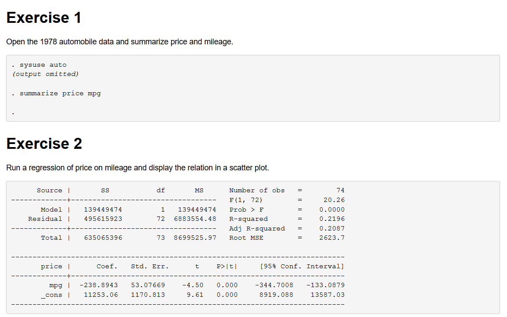
值得注意的是，如果在section内使用twoway生成了散点图，则相关命令会写在图片下面，生成独自的一份log文件。而如果在section之外使用，则命令不会被写入。
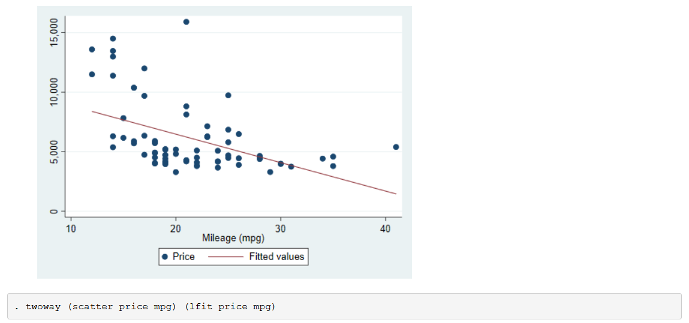
stlog_options 选项如下：
- Main
- linesize(#) 指定Stata log中的行宽，用字符数来表示
- [no]do 指定是否运行Stata命令，默认是运行
- [no]log 指定是否创建log文件并将其输出到html文件中，默认是记录。
- [no]cmdlog 指定是否仅展示命令而不输出结果，默认是 否
- [no]dosave 是否对do文件中的命令储存一份拷贝，默认是 否
- Contents
- [no]output 是否隐藏输出内容，默认是不隐藏
- [no]matastrip 是否隐藏Mata环境的开启与结束命令，默认是不隐藏
- [no]cmdstrip 是否不记录命令行，默认为记录
- [no]lbstrip 是否删去分割线，默认为不删去
- [no]gtstrip 是否删去显示继续的标志，默认为不删去
- [no]ltrim 是否删去缩进，默认为删去
- Highlighting
- mark(strlist) 给本次section指定字符加上
<mark>标签 - tag(matchlist) 给Stata输出内容加上自定义标签
- mark(strlist) 给本次section指定字符加上
- Technical
- [no]plain 是否删去引入的html标签记号(以节约空间)，默认为noplain(不删去)
- [no]raw 是否忽略标签及字符的替换过程，默认是不忽略
- [no]custom 是否使用自定义代码包装log文件内容
- [no]keep 是否在执行结束后删去log文件，默认为保留
- [no]certify 是否将结果与前代版本比较，默认为不比较
- [no]sthlp[(subst)] (stlog using专用)是否作为sthlp文件读取
- nostop (stlog using专用)当webdoc do在执行过程中遇到了error会继续执行
试一试，建立webdoc_stlog_2.do文件
|
|
效果如下图
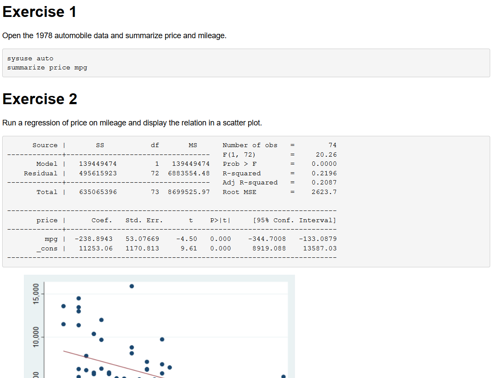
5.webdoc set 自定义所生成的html代码
事实上，webdoc在将do文件转化为html文件的过程中，本质上是给每一个输出结果加上了相应的html标签，webdoc set提供了一个修改这个默认标签的接口，这给熟悉html的人做出更漂亮的页面提供了有效路径。
该命令的语法为：
webdoc set [ setname [definition]]
setname是你想要改变的标签
本命令只能被 webdoc do 处理，当本次webdoc do执行完成后，所有的设置失效
| Description | setname | Default definition |
|---|---|---|
| Stata output section | stlog | <pre class="stlog"><samp> |
| _stlog | </samp></pre> |
|
| Stata code section | stcmd | <pre class="stcmd"><code> |
| _stcmd | </code></pre> |
|
| Stata help section | sthlp | <pre class="sthlp"> |
| _sthlp | </pre> |
|
| Stata input tag | stinp | <span class="stinp"> |
| _stinp | </span> |
|
| Stata result tag | stres | <span class="stres"> |
| _stres | </span> |
|
| Stata comment tag | <span class="stcmt"> |
|
| _stcmt | </span> |
|
| Output-omitted tag | stoom | <span class="stoom">(output omitted)</span> |
| Continued on next page tag | stcnp | <span class="stcnp" style="page-break-after:always"><br/>(continued on next page)<br/></span> |
| Figure tag | figure | <figure id="macval(id)"> |
| _figure | </figure> |
|
| Figure caption | fcap | |
| Figure link tag | flink | |
| _flink | </a> |
|
| Image tag | img | <img alt="macval(alt)" macval(title) src=" |
| _img | "macval(attributes)/> |
|
| Embedded SVG | svg | <span macval(title) macval(attributes)> |
| _svg | </span> |
试一试 修改你的webdoc_stlog_2.do文件
|
|
效果如下图
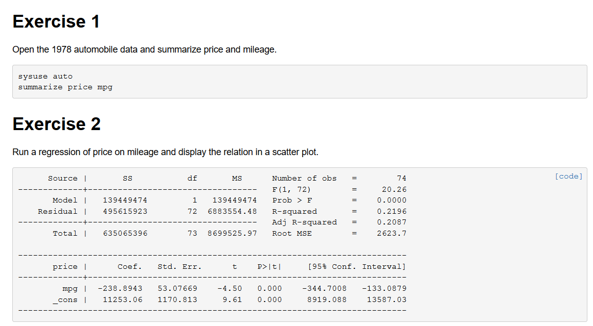
查阅该文件源代码
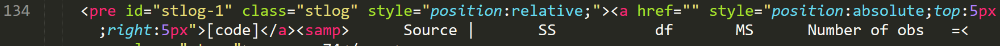
也就是说，webdoc set命令具备将固定的输出标签形式更改的能力，这一功能有什么作用呢？当你引用了bootstrap的css及js文件后，可以通过更改标签的class、引入js事件实现更加绚丽的效果
6.webdoc local
webdoc local 命令用于设置局部宏，该命令只有在 webdoc stlog 命令后方可使用，该宏会被Stata 输出结果的同名列表所存储（使用后缀名 .stloc）每一个输出结果都会有其自己的同名列表，所以不同结果间可以重复使用同名宏，webdoc local的具体用法与 local一致
通过使用webdoc local命令，你可以将输出结果直接写入文本中，webdoc local所定义的宏在 代码区和 webdoc put 命令中均适用，直至下一个webdoc stlog命令之前。需要说明的是，这两者间有一些不同，在代码区使用宏建立在了宏的内容被宏列表储存了，webdoc put则是直接使用宏。
试一试，建立webdoc_local.do文件
|
|
得到效果如下图：
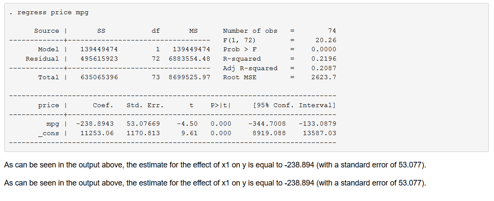
7.webdoc graph
语法格式如下：
webdoc graph [name] [, graph_options]
webdoc graph 用于将已经生成的图片插入到输出文件中，该命令可以在webdoc stlog中使用，或者在webdoc stlog close之后直接写，如果
- webdoc stlog中书写，图片会在Stata output之前生成，
- webdoc stlog close之后：图像则会在stata output之后生成，
- webdoc stlog 之外，而logall启动，图片则会在webdoc graph命令处生成。
- 除非名称被指定，则webdoc stlog模块的名字会被指定给graph的名字，
- 如果webdoc graph命令超过一个，则由计数器分配名称
graph_options 选项如下
- Main
- as(fileformats) 输出图片的格式，默认为 as(png)
- name(name) 输出图片的名称
- width(#) 输出图片的宽度，默认为 width(500)
- height(#) 输出图片的高度，
- override_options 重写转换中的默认属性
- Attributes
- alt(string) 为图片增加alt属性，默认为图片名称
- title(string) 为图片提供一个”tooltip” 标题
- attributes(args) 关于img标签更多的属性
- Environment
- [no]link[(fileformat)] 是否给图片增加一个链接，默认为增加一个链接，除非hardcode情况
- [no]figure[(id)] 是否使用figure标签，默认是使用
- caption(string) 给figure提供一个标题
- cabove or cbelow 标题位于图片上方(cabove)或者下方(cbelow)
- Technical
- [no]hardcode 是否将图片嵌入文件中
- [no]keep 当选择了hardcode后，是否要将原图片文件删除，默认为保留
- [no]custom 是否在图片中使用custom code，默认是不使用
试一试 创建你的webdoc_graph.do
|
|
得到效果如下图：
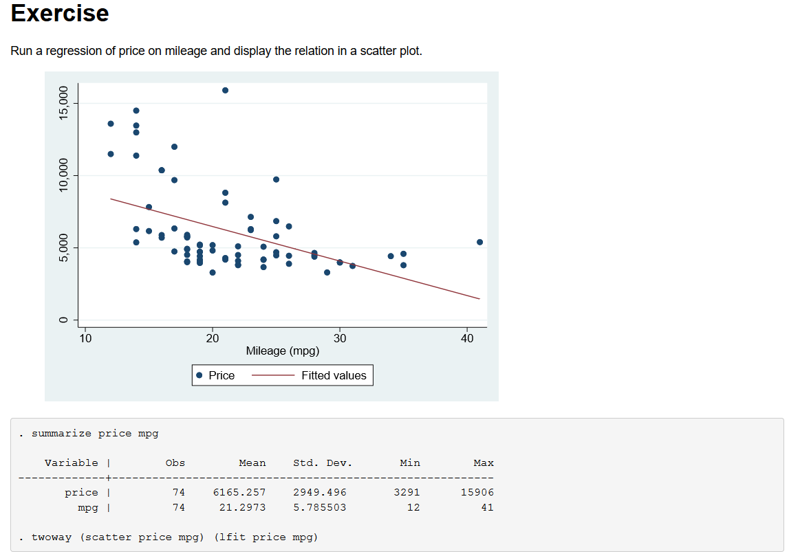
当然，更重要的是源码的效果：
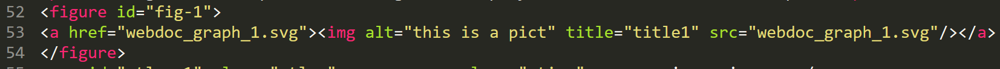
8.webdoc substitute
webdoc substitute用于将所有代码区内的文字替换为指定文字，其用法为
webdoc substitute “some text” “SOME TEXT”
如果在后续的文字部分想要改变，则可以使用 webdoc substitute 重新指定，如果想要增加替换方案，可以使用 webdoc substitute add ，如果想要清空方案，则使用webdoc substitute 不加任何参数
试一试 创建你的webdoc_substitute.do 文件
|
|
得到效果图，可以看见，代码区的字已被相应替换
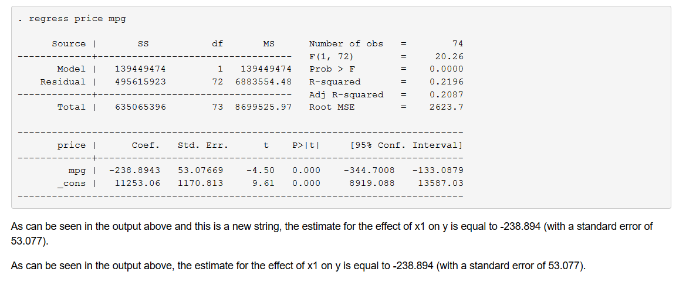
9.webdoc append 用于将其一个外部文件的内容引入
append_options选项如下
substitute(subst)应用替换功能，subst形式为 from todrop(numlist)忽略指定行数
试一试，创建 webdoc_append.do
|
|
效果图如下所示：
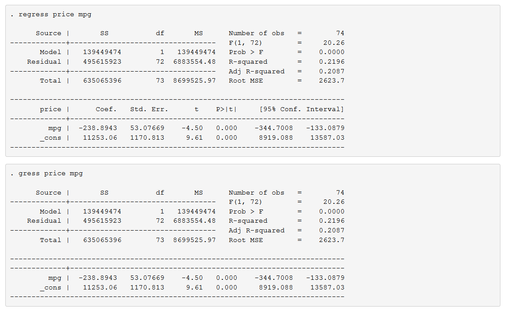
10.webdoc toc
webdoc toc [levels [offset]] [, …]
webdoc toc命令，顾名思义，是为整篇文章增加一份目录，它的添加机制是，检索整篇文章的标题符号，然后将其整理成列表，放入一个事先预设好的<span class="toc">的位置处————当然，这是一个html标签，且它需要你自己设置位置
用法
webdoc toc num1 num2
num1代表该目录要收集几级标题，默认为收集三级标题(h1 h2 h3)
num2代表该目录从哪一级标题开始采集，默认为0(即从h1开始采集)
webdoc toc 的选项如下：
- numbered 为目录增加章节数标志
- md 支持markdown格式的目录采集，即，如果你的标题是采用markdown的标记书写的，那么它同样可以找到并放置在目录里。
试一试 创建webdoc_toc.do文件
|
|
效果如下所示：
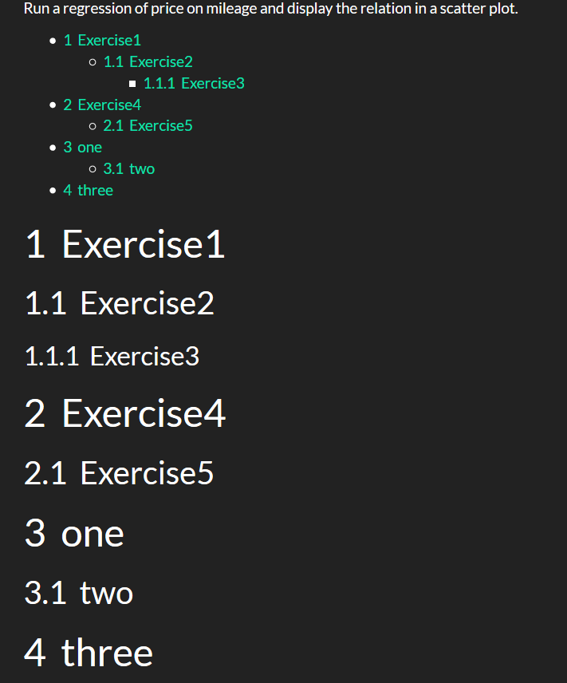
11.webdoc close 关闭html或md文件
webdoc close命令用于关闭输出文件。该命令不是必须的，因为webdoc do命令会在do文件结束时自动结束工作。
另外，如果你想在do文件结束前就结束webdoc的读取工作，可以在文件最后加上
webdoc exit（其它啥也别加），webdoc do命令就只会读取到该行为止。(注意，这两者是不同的，webdoc close是关闭输出文件，而webdoc exit是关闭webdoc do命令)
12.webdoc strip
webdoc strip filename newname [, replace append]
该命令用于将do文件中所有代码区和所有webdoc标签命令移除
- replace 如果有同名文件名，则替换之
- append 如果有同名文件名，则续写之
13.宏变量及返回结果列表
webdoc命令在执行的过程中会产生若干全局宏以供使用，当webdoc do 结束后，这些宏会被自动删除。 以下是全部的宏列表
webdoc do
12345WebDoc_dofile, WebDoc_do_snippets, WebDoc_do_replace, WebDoc_do_append, WebDoc_do_md,WebDoc_do_header, WebDoc_do_header2, WebDoc_do_logall, WebDoc_do_linesize, WebDoc_do_nodo, WebDoc_do_nolog, WebDoc_do_cmdlog, WebDoc_do_dosave, WebDoc_do_plain, WebDoc_do_raw,WebDoc_do_nooutput, WebDoc_do_matastrip, WebDoc_do_cmdstrip, WebDoc_do_lbstrip, WebDoc_do_gtstrip, WebDoc_do_noltrim, WebDoc_do_mark, WebDoc_do_tag, WebDoc_do_custom,WebDoc_do_nokeep, WebDoc_do_certify, WebDoc_do_gropts, WebDoc_do_logdir, WebDoc_do_logdir2, WebDoc_do_grdir, WebDoc_do_dodir, WebDoc_do_noprefix, WebDoc_do_prefix,WebDoc_do_prefix2, WebDoc_do_stpath, WebDoc_do_stpath2webdoc set
123WebDoc_set_stlog, WebDoc_set__stlog, WebDoc_set_stcmd, WebDoc_set__stcmd, WebDoc_set_sthlp,WebDoc_set__sthlp, WebDoc_set_stinp, WebDoc_set__stinp, WebDoc_set_stres, WebDoc_set__stres, WebDoc_set_stcmt, WebDoc_set__stcmt, WebDoc_set_stoom, WebDoc_set_stcnp,WebDoc_set_figure, WebDoc_set__figure, WebDoc_set_fcap, WebDoc_set_flink, WebDoc_set__flink, WebDoc_set_img, WebDoc_set__img, WebDoc_set_svg, WebDoc_set__svgwebdoc init
1234WebDoc_docname, WebDoc_docname_FH, WebDoc_docname0, WebDoc_basename, WebDoc_path, WebDoc_path0,WebDoc_stcounter, WebDoc_md, WebDoc_nofooter, WebDoc_logall, WebDoc_linesize, WebDoc_nodo, WebDoc_nolog, WebDoc_cmdlog, WebDoc_dosave, WebDoc_plain, WebDoc_straw, WebDoc_nooutput,WebDoc_matastrip, WebDoc_cmdstrip, WebDoc_lbstrip, WebDoc_gtstrip, WebDoc_noltrim, WebDoc_mark, WebDoc_tag, WebDoc_custom, WebDoc_nokeep, WebDoc_certify, WebDoc_gropts,WebDoc_logdir, WebDoc_do_grdir, WebDoc_dodir, WebDoc_prefix, WebDoc_prefix0, WebDoc_stpathwebdoc substitute
1WebDoc_substitutewebdoc stlog
1234WebDoc_ststatus, WebDoc_stname, WebDoc_stname0, WebDoc_stid, WebDoc_stfilename, WebDoc_stfilename0,WebDoc_stwebname, WebDoc_stwebname0, WebDoc_stgrcounter, WebDoc_stlinesize, WebDoc_stlinesize0, WebDoc_stnodo, WebDoc_stnolog, WebDoc_stcmdlog, WebDoc_stdosave, WebDoc_stplain,WebDoc_straw, WebDoc_stnooutput, WebDoc_stmatastrip, WebDoc_stcmdstrip, WebDoc_stlbstrip, WebDoc_stgtstrip, WebDoc_stnoltrim, WebDoc_stmark, WebDoc_sttag, WebDoc_stcustom,WebDoc_stnokeep, WebDoc_stcertifywebdoc local
1WebDoc_stlocwebdoc do(an external Mata global called WebDoc_do_snippets )
在使用webdoc do执行转换工作后，会产生一系列相关的结果宏，这些宏变量当遇到 webdoc init时清空并初始化，webdoc close 则将它们储存如下：
|
|
webdoc stlog close 以及 webdoc stlog using 储存了如下结果宏
|
|
14.见证大神，访问webdoc官网
webdoc的作者为了方便大家可以更详尽地了解webdoc命令，专门为其制作了一份网页，而事实上，连这个网站，都是使用webdoc生成的。作者提供了关于生成网页的源码供大家下载，点击此处领取 ，现在我们尝试将网页文件生成。
首先我们使用Stata进入解压后的文件夹目录，然后打开其中的0-compile.do文件，修改如下：将cd部分去除，将zipfile去除，即可正常运行，作者使用webdoc生成网页，虽然听起来很炫，然而大部分的工作都是使用html生成的，只是在生成目录、生成Stata output的过程中使用了一些Stata命令。因此，使用webdoc制作自动化报告容易，而制作正经的网站，并没有比传统方法更简单。
效果图如下所示(可以看见，网页已经变成了本地目录)：
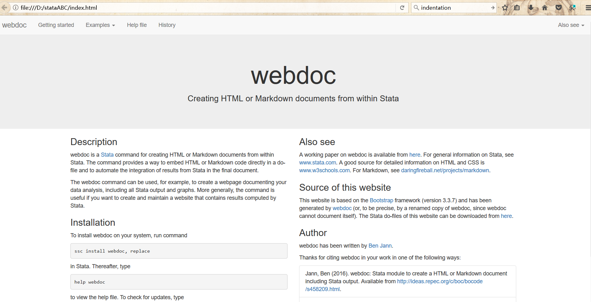
15.注意事项
$是Stata中用以表示宏的符号，因此如果你使用webdoc write或者webdoc put写的文本中含有$，别忘了加上转义字符\$- webdoc do 命令不能良好支持 semicolon command delimiter ， The semicolon command delimiter 在 webdoc commands，及
/*** ***/中正常运行 - webdoc 标签命令 应在每一行的开头书写
- webdoc stlog 不能被嵌套使用
- 不要在webdoc stlog 中写入 webdoc do 及webdoc init命令
16.尾语
赞扬
webdoc命令是一项外部命令，由University of Bern的Ben Jann独自完成，这是一项相当浩大的命令，命令全文达4000+行，所涵盖的子命令约17个，选项轻轻松松上百，作者甚至为此专门制作了一个网站————当然，它也是用webdoc生成的。之所以对这个命令进行(几乎)全文搬运，是因为它目前是Stata生成自动化报告最权威的命令。甚至于Stata原厂在更新Stata15 时新增加的dyndoc系列命令，就是大部分地借鉴了它。————但是dyndoc只在Stata15中有，而webdoc可以在Stata10版本及以上运行，因此更具有用户市场。
webdoc的命令写得繁杂，但它实现了一个大家梦寐以求的需求————Stata自动化报告，并且通过花样百出的接口，极大地改善了页面外观。
- 支持webdoc setting更改各类Stata结果输出标签，通过这一接口，可以将某一区块设置成自己想要的class，或者添加JS事件。————虽然这很麻烦，但是相比于纯手写html，它已经非常人性化了。
- 支持bootstrap主题引入，并且同样支持引入bootstrap的JS包，因此，通过webdoc直接写出来一份bootstrap框架构建的网页不是天方夜谭————当然，你也必须对bootstrap有一些了解。
- webdoc toc支持目录自动生成
- webdoc append支持引入相关文件
- …
总之，借助于webdoc，我们已经基本解决了Stata自动化报告的接口问题
反思
说了很多webdoc的优点，我们当然也要做一些反思————webdoc的缺点是什么呢？
不可否认的是————它的标签实在是太多了，这已经不亚于学习一种新式的生成html的标记语言(笔者接触并熟练使用markdown大约只用了两个小时，而翻译本篇命令，却花了整整的两天)，虽然它的获利也是很显然的————我们拥有了一种将报告自动生成的方案，基于Stata的。
除此之外，作者似乎非常放心用户们的前端基本功，开放了许多标签接口以供读者调用————甚至提供了修改标签的接口(webdoc set)，虽然这确实使得设计网页极大丰富，但也造成了命令不易推广的困扰————毕竟用户市场中，不熟悉html的是多数，如果他们在浅尝webdoc后，发现只能生成非常简陋的网页，而更多方法隐藏在一堆他们看不懂的东西后面，就会不得不辄止。这不是webdoc一个命令的问题，而是Stata中许多外部命令遇到的问题————我们是应该提供一种规定好了格式的便利化输出，还是应该提供拥有丰富接口，自由度极高的命令。至少在笔者这里看来，我们应该提供给读者前者的服务，至少应该提供几种已经设计好了的选项。
本文翻译自Stata软件：help webdoc及作者官网，爬虫俱乐部保留翻译版权 ，本博客为爬虫俱乐部官方主页。